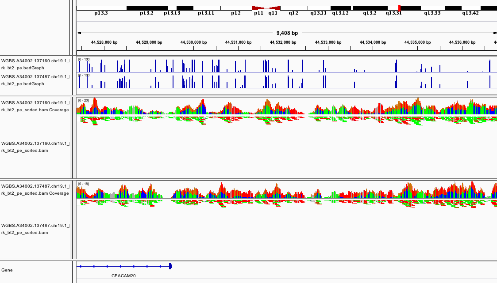

Module 4: Whole-Genome Bisulfite Sequencing and Analysis
Lab
1. Introduction
Description of the lab:
This module will cover the basics of Whole Genome Bisulfite-Sequencing (WGBS) data analysis including data visualization in IGV.
2. Mapping Tutorial
Locate the Data for the Workshop
This will define a variable $WGBS_DATA that will simplify future commands.
Check the Files
Type the following command: ls $WGBS_DATA, what do you see?
Solution (click here)
You should see something similar to this
WGBS.A34002.137160.chr19.1.fastq.gz
WGBS.A34002.137160.chr19.2.fastq.gz
WGBS.A34002.137487.chr19.1.fastq.gz
WGBS.A34002.137487.chr19.2.fastq.gz
WGBS.A34002.137488.chr19.1.fastq.gz
WGBS.A34002.137488.chr19.2.fastq.gz
These are the files that will be used for the workshop. They contain a subset of WGBS reads from CEMT sample CEMT0007, which is a mammary gland epithelial cell line (more information here).
What do the “.1” and “.2” in the file names mean?
Solution (click here)
They represent the read1 and read2 of the
paired end reads.
2.2 Map Data using Bismark
We will now process and map the reads using the Bismark WGBS aligner (more info here).
Map the first dataset using Bismark
To simplify the work, we will process the datasets one at a time. To align the first dataset, do the following:
cd ~/workspace/module4
bismark --multicore 4 --bowtie2 $GENOME/genome/bismark_index \
-1 $WGBS_DATA/WGBS.A34002.137160.chr19.1.fastq.gz -2 $WGBS_DATA/WGBS.A34002.137160.chr19.2.fastq.gz
What do all the options in the command mean? (Hint check the help by using bismark --help)
Solution (click here)
The --multicore 4 option is to do multithreaded
processing to improve speed.
The --bowtie2 option is to use the mapping algorithm
from bowtie2.
The $GENOME/genome/bismark_index specifies the location
of the index for the reference genome to use. This uses the
$GENOME variable we defined previously.
The -1 $WGBS_DATA/WGBS.A34002.137160.chr19.1.fastq.gz
specifies the location of read 1. Idem for -2 which
specifies read 2. This uses the $WGBS_DATA variable we
defined previously.
For more details, please refer to the Bismark user guide.
This step will take a few minutes to run for this reduced dataset. A dataset spanning a full genome will take several hours.
For your own datasets, make sure you have enough computing walltime to run the alignment.
While you wait for the results, ask any questions you have up to this point to the instructors.
Check files
At the end of the alignment, you should have the following files saved into your workshop folder:
{:output} WGBS.A34002.137160.chr19.1_bismark_bt2_pe.bam WGBS.A34002.137160.chr19.1_bismark_bt2_PE_report.txt
Bismark offers a tool to generate an interactive HTML report for each sample, which we can now run to obtain the summary for our first sample.
bismark2report
This will produce an additional file called: WGBS.A34002.137160.chr19.1_bismark_bt2_PE_report.html.
Let’s look at the report. We can read the text file directly on the command line:
less WGBS.A34002.137160.chr19.1_bismark_bt2_PE_report.txt
Or open the HTML report using your internet browser and the IP address of your AWS instance. Just click on the link to the HTML report and it should open.
What was the mapping efficiency? What percent of C’s were methylated in CpG context?
Solution (click here)
According to the report:
...
Mapping efficiency: 92.4%
...
C methylated in CpG context: 57.4%
C methylated in CHG context: 0.6%
C methylated in CHH context: 0.5%
C methylated in unknown context (CN or CHN): 3.5%
...
You can also look at plot the Cytosine Methylation
section in the interactive HTML report.
Close the report by pressing q.
Prepare files for loading in IGV
We need to sort the bam file and prepare an index so we will be able to load it in IGV. We will use the program samtools for this.
samtools sort WGBS.A34002.137160.chr19.1_bismark_bt2_pe.bam -o WGBS.A34002.137160.chr19.1_bismark_bt2_pe_sorted.bam
samtools index WGBS.A34002.137160.chr19.1_bismark_bt2_pe_sorted.bam
2.3 Repeat Alignment for All Datasets
How would you repeat the alignment with the other datasets?
Solution (click here)
This is the command to run bismark on the two other samples:
cd ~/workspace/module4
bismark --multicore 4 --bowtie2 $GENOME/genome/bismark_index \
-1 $WGBS_DATA/WGBS.A34002.137487.chr19.1.fastq.gz -2 $WGBS_DATA/WGBS.A34002.137487.chr19.2.fastq.gz
bismark --multicore 4 --bowtie2 $GENOME/genome/bismark_index \
-1 $WGBS_DATA/WGBS.A34002.137488.chr19.1.fastq.gz -2 $WGBS_DATA/WGBS.A34002.137488.chr19.2.fastq.gz
Remember, for the command to work, both $GENOME and
$WGBS_DATA need to be defined.
Also, if you want to generate the HTML reports, you can run
bismark2report. Bismark also has a “summary” that produces
a report for all samples (bismark2summary), we can run both
by doing the following:
bismark2report ; bismark2summary
After checking the reports, we can run the commands to prepare the samples for IGV (sort and index):
samtools sort WGBS.A34002.137487.chr19.1_bismark_bt2_pe.bam -o WGBS.A34002.137487.chr19.1_bismark_bt2_pe_sorted.bam
samtools index WGBS.A34002.137487.chr19.1_bismark_bt2_pe_sorted.bam
samtools sort WGBS.A34002.137488.chr19.1_bismark_bt2_pe.bam -o WGBS.A34002.137488.chr19.1_bismark_bt2_pe_sorted.bam
samtools index WGBS.A34002.137488.chr19.1_bismark_bt2_pe_sorted.bam
2.4 Load Data and Explore using IGV
While you wait for the previous steps to finish executing, it is a good idea to begin exploring the alignments.
Copy Files to Your Local Computer to View in IGV
Retrieve the files called WGBS.A34002.137160.chr19.1_bismark_bt2_pe_sorted.bam and WGBS.A34002.137160.chr19.1_bismark_bt2_pe_sorted.bam.bai from the server using your internet browser and the IP address of your AWS instance.
Optionally, if you are not using Putty (i.e. if you are using a Linux or Mac computer) you can also retrieve the files directly using the terminal and scp using the commands below.
Optional download option (click here)
scp -i CBW.pem ubuntu@00.00.00.0:~/workspace/module4/WGBS.A34002.137160.chr19.1_bismark_bt2_pe_sorted.bam .
scp -i CBW.pem ubuntu@00.00.00.0:~/workspace/module4/WGBS.A34002.137160.chr19.1_bismark_bt2_pe_sorted.bam.bai .
Remember that for the commands above to work, you need to be in the directory with the CBW.pem (or CBW.cer) file you downloaded from AWS when creating your instance.
Launch IGV on your computer
If you haven’t installed it yet, please get it here IGV download.
Make sure that the human genome is selected in the top left corner. It should read: Human (hg38).
Load your sorted bam file in IGV using File -> Load from file. For this to work, you need to have the index file (.bai) in the same location as the bam file.
Now go to the following location:
chr19:43,375,889-45,912,052And zoom in until you see something.
For instance, try the following window:
chr19:44,527,387-44,536,873You should see something like this:
If it looks different, can you change the way the colors are displayed?
Which section of which chromosome is covered by this dataset?
Can you see any interesting patterns in the coverage?
2.5 Generate Methylation Profiles
So far we have only mapped the reads using Bismark. We can generate methylation profiles using the following command:
cd ~/workspace/module4
bismark_methylation_extractor --cytosine_report WGBS.A34002.137160.chr19.1_bismark_bt2_pe.bam --genome_folder $GENOME/genome/bismark_index
The --cytosine_report option creates a CpG_report table summarizing key data for each CG position in the genome, which will be useful later (see section 4.2).
How would you do the same for the other replicates?
Solution (click here)
These are the commands that you should use:
cd ~/workspace/module4
bismark_methylation_extractor --cytosine_report WGBS.A34002.137487.chr19.1_bismark_bt2_pe.bam --genome_folder $GENOME/genome/bismark_index
bismark_methylation_extractor --cytosine_report WGBS.A34002.137488.chr19.1_bismark_bt2_pe.bam --genome_folder $GENOME/genome/bismark_index
Download all the files produced so far to your local computer using your internet browser.
While you wait for all the steps and downloads to finish, you can ask the instructors any questions you might have up until this point.
Load all the downloaded files in IGV using File -> Load from file.
Please be aware that if you just try to open all your files on IGV you might get a warning/error message mentioning that you are trying to open an unsorted BAM. If that is the case, ignore the message, but make sure that you are opening the sorted.bam so you can visualize your results.
At this point, if you load the region chr19:44,527,387-44,536,873 you should see something like

This promoter looks to be hypomethylated.
Can you find a promoter that is hypermethylated?
How about chr19:45,637,715-45,657,380?
How would you look for a CpG island using this view of the data?
3. Differential Methylation Analysis in MethylKit
The following section will use the Bioconductor package methylKit to do a differential methylation analysis.
You can do it in your own computer (if you have installed R and methylKit) or in the AWS instance.
To install methylKit locally on your computer, make sure you have a recent version of R and
follow the instructions in this page.
3.1 Load R and MethylKit
If you are working in AWS, you will need to load R. The image we provide already has the libraries we need.
To launch R simply type the following to your terminal:
cd ~/workspace/module4
R
If you did this properly, the following message will be displayed and your prompt will change from ubuntu@ip-00-00-00-0:~/workspace/module4$ to >:
```{:output} R version 4.2.3 (2023-03-15) – “Shortstop Beagle” Copyright (C) 2023 The R Foundation for Statistical Computing Platform: x86_64-pc-linux-gnu (64-bit) …
Once you have successfully launched `R`, you can load `methylKit` with the following command:
```{}
library("methylKit")
3.2 Import the Alignment Data into methylKit
Process Bismark Alignments
To read the alignment data into methylKit, run the following command:
methRaw.160 = processBismarkAln( location = "WGBS.A34002.137160.chr19.1_bismark_bt2_pe_sorted.bam",
sample.id="A34002.137160", assembly="hg38",
read.context="CpG", save.folder="methylkit")
This command will import the data into a format that is readable by methylKit. At the same time, it will save two files under the methylkit directory with the information so that it is easy to load again at any time:
methylkit/A34002.137160_CpG_conversionStats.txt
methylkit/A34002.137160_CpG.txt
If everything goes well and you see the files, do the same for the other two samples:
methRaw.487 = processBismarkAln( location = "WGBS.A34002.137487.chr19.1_bismark_bt2_pe_sorted.bam",
sample.id="A34002.137487", assembly="hg38",
read.context="CpG", save.folder="methylkit")
methRaw.488 = processBismarkAln( location = "WGBS.A34002.137488.chr19.1_bismark_bt2_pe_sorted.bam",
sample.id="A34002.137488", assembly="hg38",
read.context="CpG", save.folder="methylkit")
Create a MethylKit Object
Now that all the samples have been read with methylKit, you can create a file list to make it easier to load the full dataset as a methylkit object. For the purposes of this tutorial, we will consider that samples belong to two experimental groups: A34002.137160 as the control group (treatment = 0) and A34002.137487 & A34002.137488 as the treatment group (treatment = 1). We use the methRead() function to create our object, as shown below:
file.list = list( file.path("methylkit", "A34002.137160_CpG.txt"),
file.path("methylkit", "A34002.137487_CpG.txt"),
file.path("methylkit", "A34002.137488_CpG.txt") )
myobj = methRead(file.list,
sample.id=list("A34002.137160","A34002.137487","A34002.137488"),
assembly="hg38",
treatment=c(0,1,1),
context="CpG",
mincov = 10
)
What do all the options in the methRead() command mean?
Solution (click here)
file.listobject points to the location of the input data in a MethylKit format.sample.idpoints to a list with the appropriate sample name for each file.assemblyspecifies which build of the human reference genome is used.treatmentspecifies which sample belongs to each experimental group.contextspecifies the methylation context.mincovspecifies the minimum coverage required to be included in the object.
For more details, please refer to the MethylKit user guide .
If the files were loaded properly, you can check the object you just created by running the following command:
myobj
Which should output the following message followed by previews of the contents of the object:
methylRawList object with 3 methylRaw objects
...You can also get basic statistics on your object by using the following command:
getMethylationStats(myobj[[2]],plot=FALSE,both.strands=FALSE)
3.3 Find Differentially Methylated Regions with methylKit
Merge Samples
Before doing any additional analysis, methylKit needs to determine which methylated bases have sufficient coverage in all samples so they can be compared. To do that, the samples should be merged with the unite() function. This function has a parameter destrand= that is turned off by default. We will set the destrand option to TRUE which will merge the coverage of both strands. When doing your own analyses, be aware that for some kinds of methylation analyses (such as CpH methylation) results are strand-specific, so this option should be used carefully.
meth = unite(myobj, destrand=TRUE)
Perform Differential Methylation Analysis
The standard function for Differential Methylation Analysis on methylKit is calculateDiffMeth(). It takes any merged methylkit object as input. Depending on the number of replicates, it uses either Fisher’s exact or logistic regression to calculate P-values. It also, automatically produces Q-values, which are a kind of adjusted P-value. To use it with the results we obtained before, run the following command:
myDiff = calculateDiffMeth(meth)
To check the output, just type myDiff and read the summary. If you want an example of the output, check the solution below.
Solution (click here)
This is what the output looks like:
{:output} methylDiff object with 2941 rows -------------- chr start end strand pvalue qvalue meth.diff 1 chr19 42002896 42002896 + 3.271268e-01 0.69569299 8.951407 2 chr19 42002978 42002978 + 1.912989e-01 0.60732656 -21.666667 3 chr19 42007251 42007251 + 6.999764e-05 0.03228847 -55.681818 4 chr19 42007255 42007255 + 3.958578e-01 0.75196047 -11.835106 5 chr19 42007283 42007283 + 8.451850e-01 0.91347038 -2.457757 6 chr19 42007314 42007314 + 9.102723e-01 0.92865750 -1.604278 -------------- sample.ids: A34002.137160 A34002.137487 A34002.137488 destranded TRUE assembly: hg38 context: CpG treament: 0 1 1 resolution: base
To filter results by their statistical significance, methylKit provides the getMethylDiff() function which allows you to extract only the deferentially methylated CpG’s that meet a specific Q-value threshold. Additionally, it is also possible to specify whether to keep hypo or hyper methylated CpG’s only. Finally, the bedgraph() function allows you to save the the methylDiff object into a BedGraph file so you can open it with your genome browser of choice. Let’s create two BedGraph files with hypo and hyper methylated CpG’s with a Q-value below 0.05 based on the data above:
myDiff.hyper = getMethylDiff(myDiff,qvalue=0.05,difference=10,type="hyper")
bedgraph(myDiff.hyper, file.name = "hyper.CpG.bedGraph", col.name = "qvalue")
myDiff.hypo = getMethylDiff(myDiff,qvalue=0.05,difference=10,type="hypo")
bedgraph(myDiff.hypo, file.name = "hypo.CpG.bedGraph", col.name = "qvalue")
Two new files should appear now in your workshop folder:
{:output} ~/workspace/module4/hyper.CpG.bedGraph ~/workspace/module4/hypo.CpG.bedGraph
Bin Results to Obtain Differentially Methylated Regions
By default, methylKit will compute results with an individual CpG resolution. To get Differentially Methylated Regions (DMR), you have to bin your results first, using a window size of your choice. The function to do this is tileMethylCounts(), which takes a regular methylkit object as input. In this case, we will create 1000bp bins using the following command:
tiles = tileMethylCounts(myobj,win.size=1000,step.size=1000,cov.bases = 10)
As with CpG level results, samples need to be merged before the analysis can continue:
meth.tiles = unite(tiles, destrand=TRUE)
Now, we will use the calculateDiffMeth() and getMethylDiff() functions to get the DMRs.
Do you know how to do it, based on the information above?
Based on the number of differentially methylated CpGs you found above, do you anticipate many statistically significant DMRs in your analysis?
Solution (click here)
Use the following commands to perform a DMR
analysis:
myDiff.tiles = calculateDiffMeth(meth.tiles)
myDiff.tiles.hyper = getMethylDiff(myDiff.tiles,qvalue=0.1,difference=10,type="hyper")
bedgraph(myDiff.tiles.hyper, file.name = "hyper.DMR.bedGraph", col.name = "qvalue")
myDiff.tiles.hypo = getMethylDiff(myDiff.tiles,qvalue=0.1,difference=10,type="hypo")
bedgraph(myDiff.tiles.hypo, file.name = "hypo.DMR.bedGraph", col.name = "qvalue")
Using the navigation pane, download the bedGraph files you just produced and try to open them with IGV.
Do the statistical results match what you had seen before when exploring the data?
What interesting genomic features are found close to the DMRs? What could this mean?
4. Differential Methylation Analysis in DSS
The following section will use the Bioconductor package DSS to do a differential methylation analysis.
You can do it in your own computer (if you have installed R and DSS) or in the AWS instance.
To install DSS locally on your computer, make sure you have a recent version of R and
follow the instructions in this page.
4.1 Load R and DSS
If you just did the previous section, you might not need to load R again. Otherwise, please launch R using the instructions in section 3.1.
Once you have successfully launched R, you can load DSS with the following command:
library("DSS")
4.2 Import the Methylation Data into DSS
Process Bismark CpG Reports
The DSS library expects input data to be already summarized into the following columns for each CG position in the genome:
- chromosome number (
chr), - genomic coordinate (
pos), - total number of reads (
N), - and, number of reads showing methylation (
X).
Fortunately, Bismark already produced a table (CpG_report.txt) with most of that information when we ran the bismark_methylation_extractor command (see section 2.5 to review this step). Therefore, we can import the CpG_report table into R and reshape it into the proper input for DSS.
First, we will load the CpG_report.txt table for sample 137160 to our R environment and save it as a variable called CpG.report.160. To do this, we will use the base R function read.table and name the columns as follows:
chr,pos,strand,X(num. of reads showing methylation at this position),C(num. of reads without methylation in this position),C_context(2-base context at this position),tri_context(3-base context at this position)
The full command is as follows:
CpG.report.160 <- read.table("WGBS.A34002.137160.chr19.1_bismark_bt2_pe.CpG_report.txt", header = F, col.names = c("chr", "pos", "strand", "X", "C", "C_context", "tri_context")) Next, we need to calculate the total number of reads for each position by adding up the ones with and without methylation (columns X and C in the table we just imported). We will name this new column N to follow the DSS convention. Finally, we will save the input table for DSS as CpG.DSS.table.160 and make sure it is in ascending order by position with the setorder command. You can find the full commands below:
CpG.report.160["N"] <- CpG.report.160["C"] + CpG.report.160["X"]
CpG.DSS.table.160 <- CpG.report.160[c("chr", "pos", "N", "X")]
Can you repeat the above process for the other two samples?
Solution (click here)
Use the following commands to import the remaining
CpG_report tables, as well as reformatting them into
appropriate DSS input.
CpG.report.487 <- read.table("WGBS.A34002.137487.chr19.1_bismark_bt2_pe.CpG_report.txt", header = F, col.names = c("chr", "pos", "strand", "X", "C", "C_context", "tri_context"))
CpG.report.487["N"] <- CpG.report.487["C"] + CpG.report.487["X"]
CpG.DSS.table.487 <- CpG.report.487[c("chr", "pos", "N", "X")]
CpG.report.488 <- read.table("WGBS.A34002.137488.chr19.1_bismark_bt2_pe.CpG_report.txt", header = F, col.names = c("chr", "pos", "strand", "X", "C", "C_context", "tri_context"))
CpG.report.488["N"] <- CpG.report.488["C"] + CpG.report.488["X"]
CpG.DSS.table.488 <- CpG.report.488[c("chr", "pos", "N", "X")]
Hint: If you want to check all the DSS input
tables are constructed properly, you can take a peek at the “top” of
each table with the head() command in R. For
example, you should see the following if you did all the previous steps
correctly:
head(CpG.DSS.table.160){:output} chr pos N X 1 chr19 60119 0 0 2 chr19 60120 0 0 3 chr19 60172 0 0 4 chr19 60173 0 0 5 chr19 60183 0 0 6 chr19 60184 0 0
The same command for the other two samples will give the same result, because there are no reads aligning to the beginning of chromosome 19 in our dataset.
Next, we will create the BS object that DSS will use by using the makeBSseqData command and the tables we just created:
BSobj <- makeBSseqData( list(CpG.DSS.table.160, CpG.DSS.table.487, CpG.DSS.table.488),
c("sample.160","sample.487", "sample.488") )Notice how we are labeling the 3 samples with the names c("sample.160","sample.487", "sample.488") as part of this command. It is likely that you will receive a warning message when you run the command above indicating that the CG sites are not ordered. We will ignore it for now, in this case it should not impact the analysis.
If the object was constructed properly, we can inspect it’s properties by calling the variable name directly BSobj, which will output.
{:output} An object of type 'BSseq' with 2113330 methylation loci 3 samples has not been smoothed All assays are in-memory
4.3 Find Differentially Methylated Regions with DSS
The DSS library operates under different statistical assumptions than methylKit, which include a smoothing of methylation data to improve methylation analysis. By smoothing the data, DSS will attempt to correct the methylation percentage of a CpG site using the context of nearby sites. Additionally, it will then estimate the dispersion of the sites and perform a Wald statistical test to allow for comparsion across samples. These three steps are done in one single command called DMLtest which will take our BSobj as input.
We will run command is done as follows and save the results in a variable called dmlTest:
dmlTest <- DMLtest(BSobj,
group1=c("sample.160"),
group2=c("sample.487", "sample.488"),
smoothing=TRUE)
Notice how we defined the two experimental groups in the DMLtest command, using the we defined when creating BSobj. When the test finishes running, we can extract the significant Differentially Methylated Loci (DML) using the callDML command and our defined p-value threshold:
dmls = callDML(dmlTest, p.threshold=0.05)Extracting Differentially Methylated Regions (DMR) works similarly, with the callDMR command. One important difference between methylKit and DSS is that the latter does not work using bins. Instead, DSS will estimate the length of a DMR based on the dispersion of individual CpGs. Therefore, contrary to DMRs calculated with methylKit, these regions will all have different lengths.
To ensure that DMRs we call in this workshop are comparable to what we calculated with methylKit, we will set the minimum length to 500bp. The callDMR command will look like this:
dmrs = callDMR(dmlTest, minlen = 500, p.threshold=0.05)The DSS library will group all DMR results into a single table, making no distinction between hypo and hyper methylated regions. You can view the results by running calling the dmrs variable.
Look at the DSS differential methylation results and compare them to what was obtained by methylKit. Do you notice any important differences? Are there any overlaps?
To save the results of your DSS analysis as a CSV file, use the base R command write.csv. Unfortunately, there is no native DSS command to export the results into a BedGraph file, and converting the table outptut to this format is outside the scope of this workshop. We encourage you to find tools that do this after the workshop if you want to do a deeper comparsion between the DSS and methylKit results in your own datasets.
write.csv(dmls, file="DSS.DML.table.csv")
write.csv(dmrs, file="DSS.DMR.table.csv") After saving the DSS results as CSV, remember to download them to your computer, where you can open them in the file explorer, or even a spreadsheet to improve visualization and filtering.
Congrats, you’re done!
You can quit R using the quit() or q() command. Remember to stop your AWS instance after this lab to avoid unnecessary costs.
Once you are finished make sure you download all the files you need and continue exploring on IGV.
Lab Completed!
Congratulations! You have completed Lab 4!